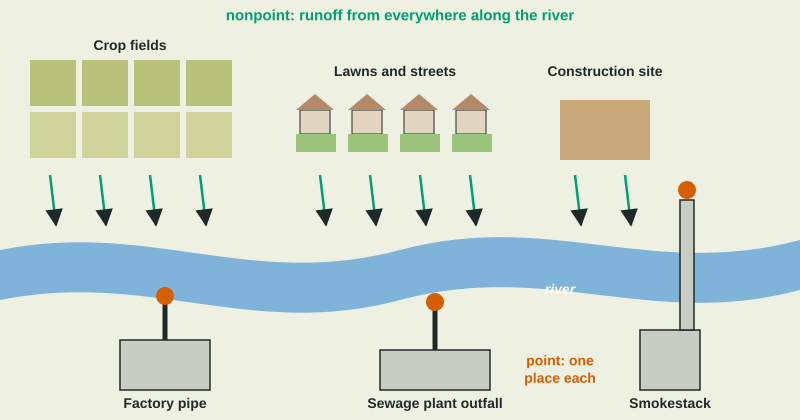

Sources of Pollution
Point sources release pollution from one identifiable place, such as a pipe or smokestack, so they can be measured, permitted and treated.
Part 1 · Hook
Why this matters
Part 2 · Before you start
What this builds on
Part 3 · Prerequisite check
Quick check before you start
1. What is runoff?
- Water that flows over the land surface into streams
- Water that soaks into an aquifer
- Water vapor in clouds
- Water held in glaciers
Show the answer
Runoff flows over the surface and carries what it picks up into streams.
- Correct: Water that flows over the land surface into streams:
- Water that soaks into an aquifer:
- Water vapor in clouds:
- Water held in glaciers:
2. What is a watershed?
- All the land that drains into one river or lake
- A layer of rock that holds groundwater
- A dam that stores water
- The bottom of a lake
Show the answer
Everything that happens on the land in a watershed can reach its river.
- Correct: All the land that drains into one river or lake:
- A layer of rock that holds groundwater:
- A dam that stores water:
- The bottom of a lake:
Part 4 · See it
See it first

Part 5 · Step by step
How it works, step by step
- A factory or sewage plant releases waste through one pipe or stackit is a point source that can be found, measured and given a permit
- Rain falls on fields, lawns, streets and construction sites across a watershedrunoff picks up fertilizer, sediment, oil, metals and pet waste from many places
- That runoff enters streams along their whole lengthit is nonpoint pollution, with no single place to measure or treat
- Laws have cut point sources sharplynonpoint sources are now the largest share of water pollution and need land-use solutions
Part 6 · Key ideas
Key ideas
- A point source comes from one identifiable place: a discharge pipe, a smokestack, a leaking tank or an oil tanker.
- A nonpoint source comes from many diffuse places: runoff from farms, lawns and streets, eroded sediment, and car exhaust across a city.
- Point sources are easier to measure, permit and treat, so laws such as the Clean Water Act have cut them a lot. Nonpoint sources now cause most water pollution.
- Nonpoint fixes work on the land: buffer strips, rain gardens, permeable pavement, careful fertilizer use and erosion control.
Part 7 · Misconception
A common mistake
The wrong idea: The worst source of pollution is the one with the biggest pipe.
What actually happens: For many rivers and lakes, most pollution comes from nonpoint sources, such as runoff from thousands of fields and streets, which no single pipe carries.
Part 8 · Check yourself
Check yourself
Exam-style questions. Anything you miss goes into your review queue.
1. Which is a point source of pollution?
- A pipe from a factory that empties into a river
- Runoff from the lawns across a suburb
- Oil washed off city streets by rain
- Sediment eroded from farm fields across a valley
Show the answer
A point source comes from one identifiable spot, such as a discharge pipe, a smokestack or a leaking tank.
- Correct: A pipe from a factory that empties into a river: Right: one pipe, one place, easy to identify.
- Runoff from the lawns across a suburb: Lawn runoff comes from many places at once, so it is nonpoint.
- Oil washed off city streets by rain: Street runoff is diffuse, so it is nonpoint.
- Sediment eroded from farm fields across a valley: Field erosion comes from a wide area, so it is nonpoint.
2. Which pair correctly matches each source to its type?
- A smokestack is nonpoint; the exhaust from a city's cars is point
- Both a smokestack and city car exhaust are point sources
- Both a smokestack and city car exhaust are nonpoint
- A smokestack is point; the exhaust from a city's cars is nonpoint
Show the answer
A smokestack is a single, identifiable outlet (point). Exhaust from all the cars in a city comes from countless moving sources (nonpoint).
- A smokestack is nonpoint; the exhaust from a city's cars is point: The labels are reversed.
- Both a smokestack and city car exhaust are point sources: City car exhaust comes from many sources, so it is nonpoint.
- Both a smokestack and city car exhaust are nonpoint: A smokestack is one outlet, so it is a point source.
- Correct: A smokestack is point; the exhaust from a city's cars is nonpoint: Right: one outlet versus many scattered sources.
Data
Where the nitrogen in a river comes from
| Source | Type of source | Nitrogen (metric tons per year) |
|---|---|---|
| Runoff from crop fields | nonpoint | 2,600 |
| Runoff from city streets and lawns | nonpoint | 700 |
| Manure from pastures | nonpoint | 500 |
| City wastewater plant outfall | point | 900 |
| Food processing plant pipe | point | 300 |
3. What percent of the river's nitrogen comes from nonpoint sources?
Type a number, then its unit (%). Scale words (2.5 million) and powers of ten (2.5 × 10^6) are read.
Show the answer
Nonpoint:
- Answer: 76 %
4. Why is the largest source in the table also the hardest to regulate?
- It flows through one large pipe that is too big to treat
- It comes from many fields, with no single pipe to permit
- It contains no nitrogen until it reaches the river
- It is a natural source, so laws do not cover it
Show the answer
Crop field runoff is nonpoint: it enters the river along many kilometers of banks from thousands of fields, so there is no single pipe to measure, permit or treat.
- It flows through one large pipe that is too big to treat: Field runoff does not come from a pipe; that is what makes it nonpoint.
- Correct: It comes from many fields, with no single pipe to permit: Right: nonpoint pollution is diffuse, so it is hard to trace and control.
- It contains no nitrogen until it reaches the river: The runoff already carries fertilizer nitrogen.
- It is a natural source, so laws do not cover it: Fertilizer runoff comes from human farming, not nature.
5. A permit could require the city wastewater plant to remove more nitrogen. What is the most that plan could cut, as a share of the total?
- 18%, the sewage plant's share
- 76%, the share from nonpoint sources
- 24%, both point sources together
- 52%, the share from crop fields
Show the answer
The plant releases 900 of 5,000 metric tons, or 18%. Even removing all of it would leave the nonpoint 76% untouched.
- Correct: 18%, the sewage plant's share: Right: 900 of 5,000 is 18%.
- 76%, the share from nonpoint sources: The permit covers the sewage plant, a point source, not runoff.
- 24%, both point sources together: The plan covers the sewage plant only, not the food plant.
- 52%, the share from crop fields: Crop runoff is not covered by the sewage plant's permit.
6. A city has many paved streets, roofs and parking lots. Why does this increase nonpoint pollution in its streams?
- Pavement absorbs rain and releases it slowly into streams
- Rain runs off pavement, carrying oil and metals
- Paved streets create one pipe that becomes a point source
- Parking lots make the rain more acidic
Show the answer
Impervious surfaces stop rain from soaking in, so it runs off fast, carrying oil, metals, litter, fertilizer and pet waste straight into storm drains and streams.
- Pavement absorbs rain and releases it slowly into streams: Pavement is impervious; it does not absorb rain.
- Correct: Rain runs off pavement, carrying oil and metals: Right: impervious surfaces send polluted runoff straight to streams.
- Paved streets create one pipe that becomes a point source: Storm runoff enters from many drains across the city.
- Parking lots make the rain more acidic: The main effect is fast runoff carrying pollutants, not acidity.
7. A town wants to cut the nonpoint pollution reaching its lake from streets and lawns. Propose a solution and explain how it works.
Build the answer part by part, then write it in your own words.
Show the answer
The solution fits a town and nonpoint runoff, and says how it works: rain gardens let runoff soak in, so soil and plants trap the pollutants before they reach the lake.
- An answer that earns the point: The town could build rain gardens and use permeable pavement in parking lots, which reduces pollution because runoff soaks into the ground, where soil and plants trap the pollutants before they reach the lake.
Part 9 · Summary
Summary
Part 10 · Up next
What comes next
Part 11 · Connections